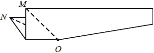

ПЪРВИ МОДУЛ
ЗАДАЧИ С ИЗБИРАЕМ ОТГОВОР
Отговорите на задачи от 1. до 16. включително отбележете в листа с отговори!
Критерии за оценяване
Верният отговор на всяка задача от 1 до 10 включително се оценява с по 2 точки.
- Кое числово равенство е вярно?
Проверете отговор
Моля, изберете отговор.
Отговорът е грешен.
Упътване: Използвайте правилото за събиране на дроби с различни знаменатели.
Отговорът е верен.
Вижте решение
Решение:
- Привеждаме под общ знаменател:
.
- Верен отговор Г).
- Стойността на израза 12 – (6 + m) при m = –12 е:
Проверете отговор
Моля, изберете отговор.
Отговорът е грешен.
Упътване: Приведете даденият израз в нормален вид и след това заместете m с неговото равно
Отговорът е верен.
Вижте решение
Решение:
І начин:
- Заместваме m с неговото равно:
12 – [6 + (–12)] = 12 – (–6) = 12 + 6 = 18.
- Верен отговор A).
II начин:
- Разкриваме скобите и правим приведение:
12 – (6 + m) = 12 – 6 – m = 6 – m.
- Заместваме m с неговото равно:
6 – (–12) = 6 + 12 = 18.
- Верен отговор A).
- При a = –1 най-малка стойност има изразът:
Проверете отговор
Моля, изберете отговор.
Отговорът е грешен.
Упътване: Заместете с дадената стойност във всеки израз и сравнете получените числа.
Отговорът е верен.
Вижте решение
- Коренът на уравнението 3(4 – х) = –4 е:
Проверете отговор
Моля, изберете отговор.
Отговорът е верен.
Вижте решение
- Равенството (3x – 2)2 = ‹ * › – 12x + 4 е тъждество, ако ‹ * › се замени с едночлена:
Проверете отговор
Моля, изберете отговор.
Отговорът е верен.
Вижте решение
- На чертежа ΔABC е разностранен. Ако АО = ОB, то точка О лежи на:
Проверете отговор
Моля, изберете отговор.
Отговорът е верен.
Вижте решение
- На чертежа правите a и b са успоредни. Ъгъл α е равен на:
Проверете отговор
Моля, изберете отговор.
Отговорът е верен.
Вижте решение
- Цената за пътуване с такси се определя по формулата C = 1,20 + 0,80.k, където k са изминатите километри, а C е цената в левове. От тази формула изминатите километри k за дадена цена С се определят така:
Проверете отговор
Моля, изберете отговор.
Отговорът е верен.
Вижте решение
Решение:
- Нека С е известното, а k – неизвестното.
- Преобразуваме дадената формула по правилото за решаване на линейно уравнение:
- Прехвърляме неизвестните от едната страна на равенството, а известните от другата страна:
0,80.k = C – 1,20.
- Освобождаваме се от коефициента пред неизвестното k, като делим двете страни на равенството с коефициента 0,80 и получаваме:
k = (C – 1,20) : 0,80.
- Верен отговор А).
- Надя, Ели, Руми и Ира продават билети за благотворителен концерт. Диаграмата показва броя на билетите, които всяка от тях е продала. Ира е продала 30 билета. Колко билета общо са продали Надя, Ели и Руми?
Проверете отговор
Моля, изберете отговор.
Отговорът е грешен.
Упътване:
- Намерете едно деление от диаграмата на колко продадени билета отговаря.
- По броя на деленията от диаграмата определете, по колко билета са продали Руми, Ели и Надя.
Отговорът е верен.
Вижте решение
Решение:
- Намираме на колко билета отговаря едно деление от диаграмата – Ира е продала 30 билета. В нейната диаграма има три деления, т.е. едно деление отговаря на 30 : 3 = 10 билета.
- Намираме броя на продадените билети от всяко от останалите момичета:
- В диаграмата на Руми има 7 деления, т.е. тя е продала 7.10 = 70 билета.
- В диаграмата на Ели има 4 деления, т.е. тя е продала 4.10 = 40 билета.
- В диаграмата на Надя има 2 деления, т.е. тя е продала 2.10 = 20 билета.
- Общо трите момичета са продали 70 + 40 + 20 = 130 билета.
- Верен отговор Б).
- Кой израз е тъждествено равен на многочлена, отговарящ на следното описание:
Към втората степен на 4y е прибавено произведението на y и 4.
Проверете отговор
Моля, изберете отговор.
Отговорът е грешен.
Упътване: От условието съставете израз и
Разложете на множители, чрез изнасяне на общ множител пред скоба.
Отговорът е верен.
Вижте решение
Критерии за оценяване
Верният отговор на всяка задача от 11 до 16 включително се оценява с по 3 точки.
- Изразът (a – 1)3 – (a – 1)(a2 + a + 1) е тъждествено равен на:
Проверете отговор
Моля, изберете отговор.
Отговорът е верен.
Вижте решение
- Колко грама захар има в 500 грама 5% захарен разтвор?
Проверете отговор
Моля, изберете отговор.
Отговорът е грешен.
Упътване: Намерете процент от число.
Отговорът е верен.
Вижте решение
Решение:
- Намираме процент от число:
5% от 500 g = 0,05.500 = 25 g.
- Верен отговор Б).
- След като похарчил от парите, които имал, на Мони му останали 20 лева. Колко лева е похарчил Мони?
Проверете отговор
Моля, изберете отговор.
Отговорът е грешен.
Упътване:
- Намерете каква част от парите са останали.
- Намерете началната сума.
- Намерете част от число, за да намерите похарчената сума.
Отговорът е верен.
Вижте решение
Решение:
- Приемаме, че цялата сума е 1.
- Мони е похарчил от сумата. Намираме каква част от сумата му е останала:
1 – = .
- Нека сумата, която имал в началото отбележим с x, тогава:
от x = 20 . x = 20 x = 100 лв.
- Намираме похарчената сума:
от 100 = . 100 = 80 лв.
- Верен отговор В).
- Мярката на BAC от чертежа е:
Проверете отговор
Моля, изберете отговор.
Отговорът е верен.
Вижте решение
- На чертежа точката D от отсечката AC е избрана така, че AD = DB = BC. Мярката на ABC e:
Проверете отговор
Моля, изберете отговор.
Отговорът е верен.
Вижте решение
- Ъглополовящите AM и BN в успоредника ABCD разделят страната DC на три равни части. Дължината на страната BC е a cm. Периметърът на успоредника ABCD в сантиметри е равен на:
Проверете отговор
Моля, изберете отговор.
Отговорът е грешен.
Упътване:
- Докажете, че ΔAMD е равнобедрен.
- Намерете AВ и след това намерете периметъра на ΔABC.
Отговорът е верен.
Вижте решение
Решение:
- (AB || CD) ∩ AM BAM = AMD (като кръстни ъгли), т.е. ΔAMD – равнобедрен или AD = DM = a cm.
- По условие DM = MN = CN CN = MN = DM = AD = a cm.
- Тогава CD = AB = 3a cm.
- PABCD = 2(AB + BC) = 2(3a + a) = 8a cm.
- Верен отговор В).
ЗАДАЧИ СЪС СВОБОДЕН ОТГОВОР
Отговорите на задачи 17. – 20. запишете на съответните места в листа с отговори.
- Запишете едно цяло число и едно дробно число, които са решения на неравенството 9 ≤ –3x.
Вижте упътване
Вижте решение
Решение:
- Решаваме неравенството:
9 ≤ –3x 3x ≤ –9 x ≤ –3.
- Цялото число, което е решение на това неравенство е –3 (може и всяко друго по-малко от –3), а дробно число нека да е –3,7.
- Краен отговор:
–3 и –3,7.
Критерии за оценяване
4 точки – при две числа, удовлетворяващи условията.
3 точки – две числа от един и същ вид (две цели или две дробни), удовлетворяващи условията.
2 точки – за написано едно число, удовлетворяващо условията.
0 точки – при всички останали случаи.
- Триъгълникът ABC на чертежа е правоъгълен, CH е височината към хипотенузата АВ, CE е медианата към страната AB, AН = 3 cm и AC = 6 cm.
Във втората колона на таблицата запишете пропуснатия текст така, че всяко твърдение да отговаря на данните от чертежа.
(1) Височината в ΔCEB през върха С е отсечката ........ .
(2) Мярката на EAC е ........°.
(3) Отсечката АС е два пъти по-малка от отсечката ......... .
(4) Мярката на BEC е .......°
(5) Дължината на отсечката ВН е ....... сm.
Вижте упътване
Вижте решение
Решение:
- От определението за височина, следва че отсечката
(1): СН е височината към страната ЕВ в ΔCEB.
- Намираме EAC:
- В ΔAHC имаме: AHC = 90°, AC = 2AH ACH = 30°.
- От кратката теорема за сбор на ъгли в ΔAHC получаваме:
HAC + ACH = 90° HAC + 30° = 90° HAC = 60°.
- Тогава
(2): EAC = 60°.
- Попълваме третото изречение:
- Прилагаме кратката теорема за сбор на ъгли в ΔABC:
- ABC + BAC = 90° ABC + 60° = 90° ABC = 30°.
- В ΔABC имаме: ACB = 90°, ABC = 30° AC = AB.
- Третото изречение е: Отсечката АС е два пъти по-малка от отсечката
(3): АВ.
- Намираме BEC:
- СЕ – медиана в правоъгълният ΔABC CE = AE = BE ΔBEC – равнобедрен, т.е. ECB = EBC = 30°.
- Прилагаме теорема за сбор на ъгли в ΔEBC:
BEC + ECB + EBC = 180° BEC + 2.30° = 180° (4): BEC = 120°.
- Намираме отсечката ВН:
- Доказахме, че ΔAEC – равнобедрен и EAC = 60° AEC = ACE = 60°, т.е. ΔAEC – равностранен CE = AE = AC = 6 cm.
- Тогава BE = AE = 6 cm.
- HE = AE – AH = 6 – 3 = 3 cm.
- BH = HE + EB = 3 + 6 = 9 cm, т.е.
(5): BH = 9 cm.
Критерии за оценяване
- 1 точка за
(1) – СН (без значение от подредбата на буквите).
- 1 точка за
(2) – 60°.
- 1 точка за
(3) – AB (без значение от подредбата на буквите).
- 2 точки за
(4) – 120°.
- 2 точки за
(5) – 9 cm.
- Общо 7 точки.
- В квадратната мрежа начертайте един равнобедрен тъпоъгълен триъгълник и втори триъгълник, еднакъв на първия, който има точно един общ връх с първия.
Върховете на начертаните триъгълници трябва да бъдат във върховете на квадратчетата на мрежата.
Вижте упътване
Вижте решение
Критерии за оценяване
- 6 точки – за начертан един тъпоъгълен равнобедрен триъгълник и втори триъгълник, който е еднакъв на първия и има точно един общ връх с него.
- 5 точки – за начертан един тъпоъгълен равнобедрен триъгълник и втори триъгълник, който е еднакъв на първия, но няма точно един общ връх с него.
- 4 точки – за начертан един тъпоъгълен равнобедрен триъгълник и втори триъгълник, който има точно един общ връх с първия, но не е еднакъв на него.
- 3 точки – за начертан само един тъпоъгълен равнобедрен триъгълник.
- 2 точки – за начертан само един тъпоъгълен разностранен триъгълник.
- 1 точка – за начертан само един равнобедрен, но не тъпоъгълен, триъгълник.
- 0 точки – във всички останали случаи.
Забележка: За вярно решение се приема и ако, двата триъгълника, освен един общ връх, имат обща вътрешна част или част от страна.
- На диаграмата са представени резултатите на осем ученици на ТЕСТ 1 и на ТЕСТ 2.
Във втората колона на таблицата срещу номера на всеки въпрос запишете правилния според вас отговор.
Въпрос (1). Кой от учениците има толкова точки на ТЕСТ 1, колкото са точките на Иван на ТЕСТ 1?
Въпрос (2). Кой от учениците има най-много точки общо на двата теста?
Въпрос (3). Колко от учениците имат повече от 75 точки общо на двата теста?
Въпрос (4). Колко от учениците имат толкова точки на ТЕСТ 1, колкото и на ТЕСТ 2?
Вижте упътване
Вижте решение
Решение:
- Въпрос (1): Вики (по 30 точки).
- Въпрос (2): Явор (60 + 60 = 120 точки).
- Въпрос (3): Геро (15 + 75 = 90 точки), Вики (30 + 60 = 90 точки), Роси (45 + 45 = 90 точки), Явор (60 + 60 = 120 точки). Общо четирима.
- Въпрос (4): Иван (по 30 точки), Роси (по 45 точки), Явор (по 60 точки). Общо трима.
Забележка: В листа с отговори се записват само имената или бройките.
Критерии за оценяване
- 2 точки –
(1): Вики.
- 2 точки –
(2): Явор.
- 3 точки –
(3): 4 или Геро, Вики, Роси, Явор или Г, В, Р, Я.
- 3 точки –
(4): 3 или Иван, Роси, Явор или И, Р, Я.
Забележка.
(1) Ако вторият отговор е грешен, но третият отговор е правилно изчислен с тази грешка, за третия отговор се дават 2 точки.
(2) Ако числото в четвъртия отговор е равно на 0,6 от числото в третия отговор, за четвъртия отговор се дават 2 точки.
ВТОРИ МОДУЛ
Отговорите на задачи 21. и 22. запишете на съответните места в листа с отговори.
- ЦЕНА НА ГОРИВО
Автомобилът на г-н Монов изразходва 8 литра гориво на 100 километра при средна скорост 55 km/h. Цената на литър гориво е 2,50 лв.
Дължината на пътя от София до Самоков е 60 km.
21.А) Г-н Монов изминал разстоянието от София до Самоков по този път със средна скорост 55 km/h. Колко лева струва горивото за това пътуване?
21.Б) Изчислено е, че автомобилът на г-н Монов е най-икономичен, когато се движи с 140% от тази средна скорост. Тогава той изразходва с по-малко гориво от разхода при скорост 55 km/h.
Пречертайте и попълнете последния ред на таблицата.
| Автомобилът е най-икономичен, когато |
| се движи със скорост |
изразходва за 100 km |
цена гориво за 100 km |
цена гориво от София до Самоков. |
| …. km/h |
….. литра |
……. лв. |
……. лв. |
Вижте упътване
Упътване:
А)
- Намерете изразходваното гориво за 1 km.
- Намерете изразходваното гориво за 60 km.
- Умножете по цената за 1 литър.
Б)
- От даденото намерете: икономичната средна скорост и разхода на гориво за 100 km при икономичната средна скорост.
- Намерете цената на горивото за 100 km при икономичното движение.
- По същият начин, както в А) намерете цената на горивото от София до Самоков.
Вижте решение
Решение:
А) Отговаряме на въпроса:
- За 1 km автомобилът изразходва 8 : 100 = 0,08 литра гориво.
- Намираме изразходваното гориво за разстоянието от София до Самоков:
60 . 0,08 = 4,8 литра гориво.
- За цялото пътуване е заплатено 4,8 . 2, 50 = 12 лв.
- Отговор:
12 лв.
Б) Попълваме таблицата като използваме условието.
- Намираме икономичната средна скорост:
140% от 55 = 1,4 . 55 = 77 km/h.
- Намираме разхода на гориво на 100 km при тази средна скорост:
8 – . 8 = 6,4 литра.
- Намираме цената на горивото за 100 km при икономичното движение:
6,4 . 2,50 = 16 лв.
- Намираме цената на горивото от София до Самоков по аналогичен начин както в отговор А):
- За 1 km изразходва 6,4 : 100 = 0,064 литра гориво.
- За пътя от София до Самоков изразходва 60 . 0.064 = 3,84 литра гориво.
- За пътуването е заплатено 3,84 . 2, 50 =
9,6 лв.
- Отговор:
| Автомобилът е най-икономичен, когато |
| се движи със скорост |
изразходва за 100 km |
цена гориво за 100 km |
цена гориво от София до Самоков. |
77 km/h. |
6,4 литра. |
16 лв. |
9,6 лв. |
Критерии за оценяване
А)
- 2 точки – за правилен отговор
12 лв. или 12.
- 1 точка – при един от двата отговора
1,2 или 120 (лв).
- 0 точки – при друг отговор.
Б) Общо 7 точки, като:
- 1 точка за отговор
77 km/h.
- по 2 точки за останалите отговори:
6,4 литра; 16 лв. и 9,60 лв.
- ЛИСТ ХАРТИЯ
Правоъгълен лист хартия е сгънат наполовина, както е показано на чертежа.
След това сгънатият лист е разрязан по пунктираната линия и отрязаното малко парче е разгънато.
22.А) Препишете изречението и го допълнете като на съответното място от всяко каре изберете правилната дума.
| Разгънатото отрязано парче има формата на |
тъпоъгълен
остроъгълен
правоъгълен |
и |
разностранен
равностранен
равнобедрен |
триъгълник |
22.Б) Колко процента е лицето на изрязаното парче от лицето на правоъгълния лист? Закръглете отговора с точност до цяло число.
22.В) Останалата част от правоъгълния лист също е разгъната и сложена на масата. Колко градуса е мярката на получения MON?

Вижте упътване
Упътване:
А) Докажете, че отрязаната част от правоъгълния лист е равнобедрен триъгълник.
Б) Ако лицето на отрязаната час отбележим с b, лицето на правоъгълния лист – с a и търсеният процент с x, то намерете х от равенството x% от a = b.
В) Докажете, че останалата част от правоъгълния лист е равнобедрен триъгълник.
Вижте решение
Решение:
А) Допълваме даденото изречение:
- Разгънатото изрязано парче е ΔABO, който е показан на фигурата.
- Листът е сгънат навътре, т.е. ΔABO е
остроъгълен.
- Страните АО и ВО лежат в двете еднакви половинки от дадения правоъгълен лист, т.е. АО = ВО или ΔABO –
равнобедрен.
- Изречението е: Разгънатото отрязано парче има формата на
остроъгълен и равнобедрен триъгълник.
Б) Отговаряме на въпроса:
- SΔABO = = 6 cm2.
- SПРАВОЪГЪЛНИК = 4 . 8 = 32 cm2.
- Нека търсеният процент да отбележим с x. Тогава:
x% от 32 = 6 .32 = 6 x = 18, 75 ≈ 19.
- Отговор:
19 %.
В) ΔMNO от разгънатата останала част от правоъгълния лист е показана на чертежа.
- ΔMNO е равнобедрен, защото MO = NO, но OD – височина OD – медиана, т.е. MD = ND = 2 cm.
- По условие OD = 2 cm MD = OD = ND = 2 cm.
- Тогава ΔMDO и ΔNDO са равнобедрени и от теорема за сбор на ъгли получаваме:
DMO = MOD = 45°, DNO = NOD = 45°.
- MON = NOD + MOD = 45° + 45° = 90°.
- Отговор:
Ъгъл MON е равен на 90°.
Критерии за оценяване
А) Общо 2 точки – по 1 точка за всеки правилен отговор остроъгълен, равнобедрен.
Б)
- 3 точки – за правилен отговор
19 или 19%.
- 2 точки – за отговор
18 или 18% или за десетична дроб в интервала [18,01; 18,99].
- 1 точка – за отговор
0,1875 или 0,19 или 0,18.
- 0 точки – за друг отговор.
B) 1 точка – за правилен отговор 90°.
На задачи 23. и 24. запишете пълните решения с необходимите обосновки.
- Дадени са уравненията (3 – x)2 – 7 = (–x – 1)2 и 1 = 4(2a2 + x), където а е параметър. Намерете стойностите на a, за които тези уравнения са еквивалентни.
Вижте упътване
Вижте решение
Решение:
- За първото уравнение прилагаме формули за съкратено умножение (2) и (9):
(3 – x)2 – 7 = (–x – 1)2 9 – 6x + x2 – 7 = x2 + 2x + 1.
- Свеждаме полученото уравнение до линейно уравнение:
9 – 6x + x2 – 7 – x2 – 2x – 1 = 0 – 8x + 1 = 0.
- Решаваме това линейно уравнение:
– 8x = – 1 | . (– 1) 8x = 1 x = .
- Привеждаме даденото параметрично уравнение в основен вид:
1 = 4(2a2 + x) 1 = 8a2 + 4x 4x = 1 – 8a2.
- Коефициентът пред неизвестното е 4, т.е. той не зависи от параметъра, затова решенията на параметричното уравнение са:
x = .
- Двете уравнения са еквивалентни, когато решенията им са еднакви, т.е., когато:
= .
- Привеждаме под общ знаменател и преобразуваме:
= 1 = 2(1 – 8a2) 1 = 2 – 16a2 16a2 – 1 = 0 (4a – 1)(4 + 1) = 0.
- Това уравнение е нелинейно и решенията му са:
- 4a – 1 = 0 a = .
- 4a + 1 = 0 a = – .
- Отговор: Търсените стойности са a = ± .
Критерии за оценяване
Общо 10 точки, като:
- 2 точки – за приложението на Формули (2) и (9). По една точка за всяка правилно приложена формула.
- 1 точка – за преобразуване на уравнението до вида ax = b.
- 1 точка – за намиране на решенията на линейното уравнение.
- 2 точки – за решаване на параметричното уравнение.
- 1 точка – за приравняване на корените на двете уравнения.
- 1 точка – за преобразуване до уравнение от вида (ax + b)(cx + d) = 0.
- 2 точки – за намиране на двата корена на последното уравнение, като всеки корен се оценява на 1 точка.
- Върху страните AD и BC на правоъгълника ABCD са избрани съответно точките K и P така, че ΔDKP e равностранен със страна 18 cm. Диагоналът BD минава през средата N на отсечката KP. През върха A е построена права, перпендикулярна на BD, която пресича BC в точка M. Намерете дължината на PC и докажете, че ΔKND ≅ ΔPNB. Намерете периметъра на четириъгълника AMNK.
Вижте упътване
Вижте решение
Решение:
- Намираме PC:
- По условие ΔKPD – равностранен PKD = KDP = KPD = KPD = 60°.
- Но т.N среда на KP (по усл.) DN – медиана, ъглополовяща, височина в ΔKPD PDN = KDN = 30°.
- CDP = 90° – PDK = 90° – 60° = 30°.
- В ΔPCD имаме: C = 90°, CDP = 30°, DP = 18 cm PC = DP = . 18 = 9.
- Отговор:
PC = 9 cm.
- ΔKND ≅ ΔPNB по II признак, защото: 1) KN = PN – по условие; 2) KDN = NBC – като кръстни ъгли на (AD || BC) ∩ BD; 3) KND = PNB – като връхни ъгли. BP = DK = 18 cm.
- AD = BC = BP + CP = 18 + 9 = 27 cm.
- Тогава AK = AD – KD = 27 – 18 = 9 cm.
- Намираме периметъра на AMNK:
- По условие KN = NP = 9 cm.
- KP BD и AM BD KP || AM, но по условие AK || PM AMPK – успоредник, т.е. AM = KP = 18 cm и MP = AK = 9 cm.
- NPB = PKD – като кръстни ъгли на (AD || BC) ∩ KP NPM = 60°, но MP = NP = 9 cm – по д-во ΔNMP – равностранен, т.е. MN = MP = NP = 9 cm.
- PAMPN = AM + MN + KN + AK = 18 + 9 + 9 + 9 = 45 cm.
- Отговор:
PAMPN = 45 cm.
Критерии за оценяване
Общо 10 точки, като:
- 1 точка – за намирането на
ъгъл CDP = 30°.
- 1 точка – за намирането на
РС = 9 cm.
- 2 точки – за доказателството на
ΔKND ≅ ΔPNB.
- 1 точка – за д-во, че
DN е перпендикулярна на KP.
- 1 точка – за д-во, че
AMPK – успоредник.
- 1 точка – за намирането на
AD = BC = 27 cm.
- 2 точки – за намирането на
MN.
- 1 точка – за намирането на
PAMPK = 45 cm.